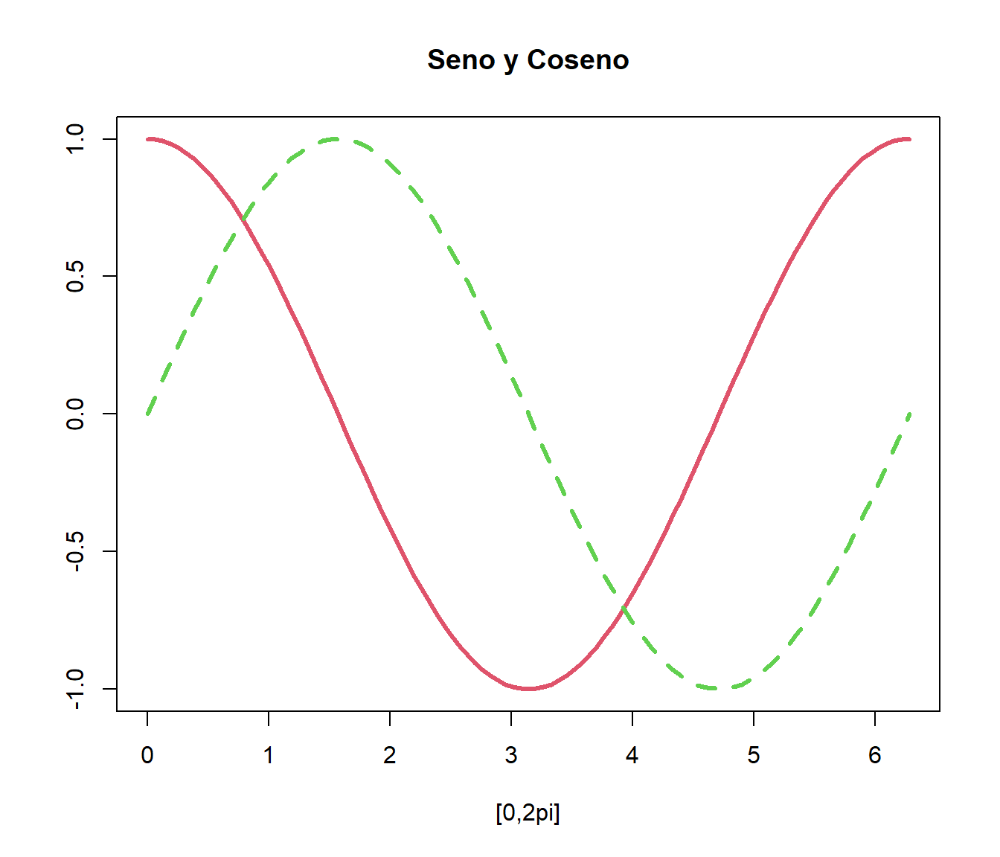
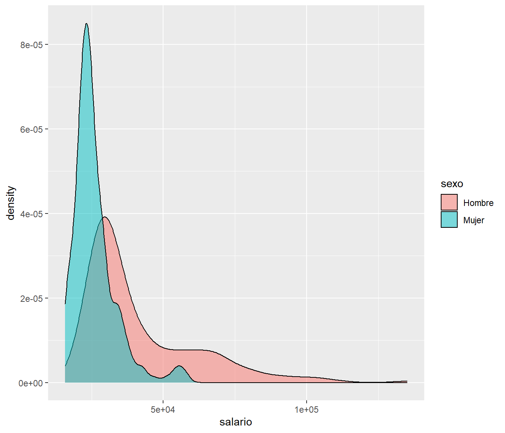

Capítulo 3 Gráficos
R dispone de varias funciones que permiten la
realización de gráficos. Estas funciones se dividen en dos grandes
grupos
Gráficos de alto nivel: Crean un gráfico nuevo.
plot, hist, boxplot, ...
Gráficos de bajo nivel: Permiten añadir elementos (líneas, puntos, …) a un gráfico ya existente
points, lines, legend, text, ...El parámetro
add=TRUEconvierte una función de nivel alto a bajo.
Dentro de las funciones gráficas de alto nivel destaca la función plot
que tiene muchas variantes y dependiendo del tipo de datos que se le
pasen como argumento actuará de modo distinto.
3.1 El comando plot
Si escribimos plot(x, y) donde x e y son vectores, entonces R
hará directamente el conocido como gráfico de dispersión que
representa en un sistema coordenado los pares de valores \((x,y)\).
Por ejemplo, utilizando el siguiente código
data(cars)
plot(cars$speed, cars$dist) # otra posibilidad plot(cars)
Figura 3.1: Gráfico de dispersión de distancia frente a velocidad
El comando plot incluye por defecto una elección automáticas de
títulos, ejes, escalas, etiquetas, etc., que pueden ser modificados
añadiendo parámetros gráficos al comando:
| Parámetro | Descripción |
|---|---|
type |
tipo de gráfico: |
p: puntos, l: líneas, b: puntos y líneas, n: gráfico en blanco, …
xlim, ylim | límites de los ejes (e.g. xlim=c(1, 10) o xlim=range(x))
xlab, ylab | títulos de los ejes
main, sub | título principal y subtítulo
col | color de los símbolos (véase colors())
véase col.axis, col.lab, col.main, col.sub
lty | tipo de línea
lwd | anchura de línea
pch | tipo de símbolo
cex | tamaño de los símbolos
bg | color de relleno (para pch = 21:25)
Para obtener ayuda sobre estos parámetros ejecutar help(par).
Veamos algún ejemplo:
plot(cars, xlab = "velocidad", ylab = "distancia", main = "Título")
Figura 3.2: Gráfico de dispersión de distancia frente a velocidad, especificando título y etiquetas de los ejes
plot(cars, pch = 16, col = 'blue', main = 'pch=16')
Figura 3.3: Gráfico de dispersión de distancia frente a velocidad, cambiando el color y el tipo de símbolo
3.2 Funciones gráficas de bajo nivel
Las principales funciones gráficas de bajo nivel son:
| Función | Descripción |
|---|---|
points y lines |
agregan puntos y líneas |
text |
agrega un texto |
mtext |
agrega texto en los márgenes |
segments |
dibuja línea desde el punto inicial al final |
abline |
dibuja líneas |
rect |
dibuja rectángulos |
polygon |
dibuja polígonos |
legend |
agrega una leyenda |
axis |
agrega ejes |
locator |
devuelve coordenadas de puntos |
identify |
similar a locator |
3.3 Ejemplos
plot(cars)
abline(h = c(20, 40), lty = 2) # líneas horizontales discontinuas (lty=2)
# selecciona puntos y los dibuja en azul sólido
points(subset(cars, dist > 20 & dist < 40), pch = 16, col = 'blue') 
x <- seq(0, 2 * pi, length = 100)
y1 <- cos(x)
y2 <- sin(x)
plot( x, y1, type = "l", col = 2, lwd = 3, xlab = "[0,2pi]", ylab = "", main = "Seno y Coseno")
lines(x, y2, col = 3, lwd = 3, lty = 2)
points(pi, 0, pch = 17, col = 4)
legend(0, -0.5, c("Coseno", "Seno"), col = 2:3, lty = 1:2, lwd = 3)
abline(v = pi, lty = 3)
abline(h = 0, lty = 3)
text(pi, 0, "(pi,0)", adj = c(0, 0))Alternativamente se podría usar curve():
curve(cos, 0, 2*pi, col = 2, lwd = 3,
xlab = "[0,2pi]", ylab = "", main = "Seno y Coseno")
curve(sin, col = 3, lwd = 3, lty = 2, add = TRUE)
3.4 Parámetros gráficos
Como ya hemos visto, muchas funciones gráficas permiten establecer (temporalmente)
opciones gráficas mediante estos parámetros.
Con la función par() se pueden obtener y establecer (de forma permanente) todas las opciones gráficas.
Algunas más de estas opciones son:
| Parámetro | Descripción |
|---|---|
adj |
justificación del texto |
axes |
si es FALSE no dibuja los ejes ni la caja |
bg |
color del fondo |
bty |
tipo de caja alrededor del gráfico |
font |
estilo del texto |
| \ | (1: normal, 2: cursiva, 3:negrita, 4: negrita cursiva) |
las |
orientación de los caracteres en los ejes |
mar |
márgenes |
mfcol |
divide la pantalla gráfica por columnas |
mfrow |
lo mismo que mfcol pero por filas |
Ejecutar help(par) para obtener la lista completa.
3.5 Múltiples gráficos por ventana
En R se pueden
hacer varios gráficos por ventana. Para ello, antes de ejecutar la
función plot, se puede utilizar la función:
par(mfrow = c(filas, columnas))Los gráficos se irán mostrando en pantalla por filas. En caso de que se
quieran mostrar por columnas en la función anterior se sustituye mfrow
por mfcol.
Por ejemplo, con el siguiente código se obtiene el gráfico de la siguiente transparencia.
par(mfrow = c(2, 3))
plot(cars, pch = 1, main = "pch = 1")
plot(cars, pch = 2, main = "pch = 2")
plot(cars, pch = 3, main = "pch = 3")
plot(cars, col = "red", main = "col = red")
plot(cars, col = "blue", main = "col = blue")
plot(cars, col = "brown", main = "col = brown")
Para estructuras gráficas más complicadas véase help(layout).
3.6 Exportar gráficos
Para guardar gráficos, en
Windows, se puede usar el menú Archivo -> Guardar como de la ventana gráfica (seleccionando el formato deseado: bitmap, postscript,…) y también
mediante código ejecutando savePlot(filename, type).
Alternativamente, se pueden emplear ficheros como dispositivos gráficos. Por ejemplo, a continuación guardamos un gráfico en el fichero car.pdf:
pdf("cars.pdf") # abrimos el dispositivo gráfico
plot(cars)
dev.off() # cerramos el dispositivoCon el siguiente código guardaremos el gráfico en formato jpeg:
jgeg("cars.jpg") # abrimos el dispositivo gráfico
plot(cars)
dev.off() # cerramos el dispositivoOtros formatos disponibles son bmp, png y tiff. Para más detalles ejecutar:
help(Devices)3.7 Otras librerías gráficas
Además de los gráficos estándar, en R están disponibles muchas librerías gráficas adicionales:
Gráficos Lattice (Trellis)
Especialmente adecuados para gráficas condicionales múltiples.
No se pueden combinar con las funciones estándar.
Generalmente el argumento principal es una formula:
y ~ x | agráficas deysobrexcondicionadas poray ~ x | a*bgráficas condicionadas porayb
Devuelven un objeto con el que se puede interactuar.
Más librerías gráficas:
Para más detalles ver CRAN Task View: Graphics
3.7.1 Ejemplos
load("datos/empleados.RData")
library(lattice)
xyplot(log(salario) ~ log(salini) | sexoraza, data = empleados)
# Equivalente a xyplot(log(salario) ~ log(salini) | sexo*minoria, data = empleados)library(ggplot2)
ggplot(empleados, aes(log(salini), log(salario), col = sexo)) +
geom_point() +
geom_smooth(method = "lm", se = FALSE)ggplot(empleados, aes(salario, fill = sexo)) +
geom_density(alpha=.5)